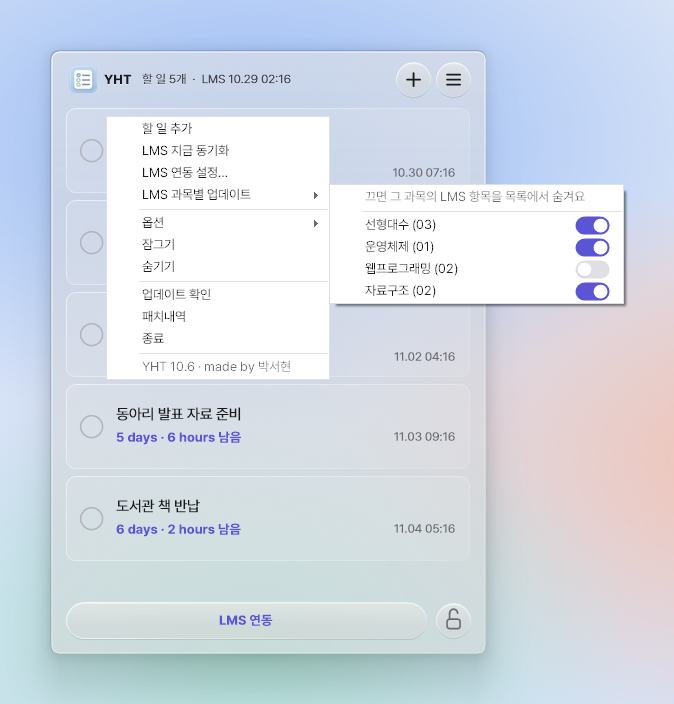
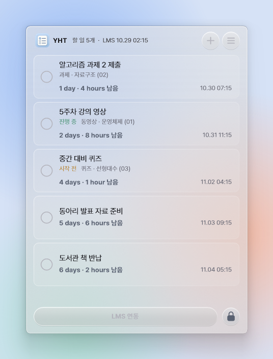
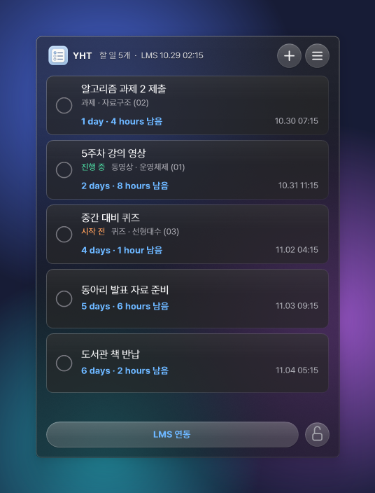
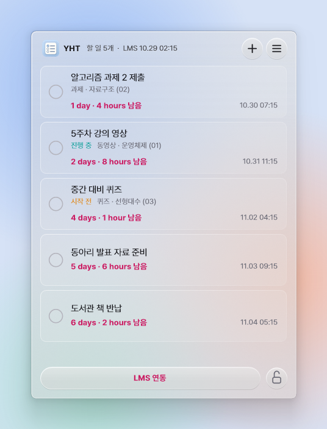
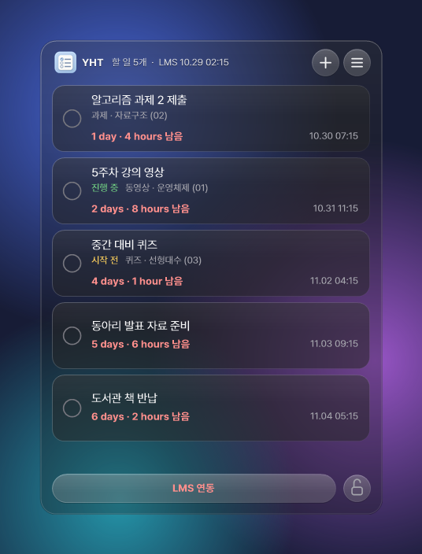
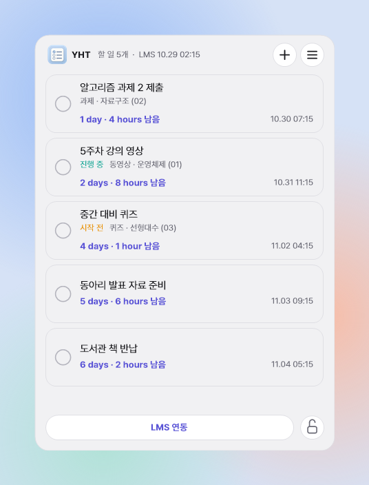
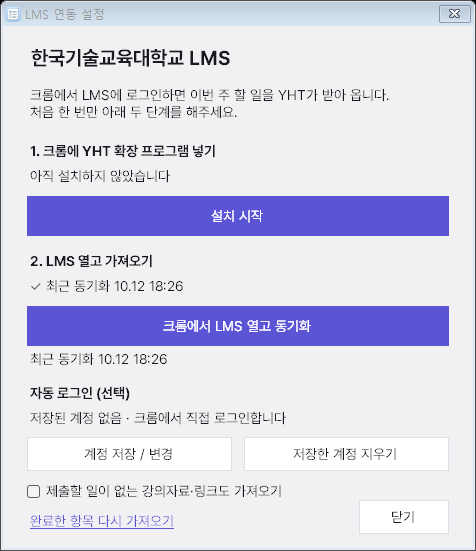

로그인만 하면 알아서 들어와요
크롬으로 LMS에 로그인하면 이번 주 할 일이 마감 순서대로 위젯에 쌓여요. 바로 받고 싶으면 LMS 연동 버튼을 누르고, LMS 홈을 띄워 둔 동안에는 15분마다 다시 확인해요.
YHT는 한국기술교육대학교 LMS의 과제, 퀴즈, 강의 영상 마감을 바탕화면에 띄워 주는 Windows 위젯이에요.
크롬으로 LMS에 로그인하면 이번 주 할 일이 마감 순서대로 위젯에 쌓여요. 바로 받고 싶으면 LMS 연동 버튼을 누르고, LMS 홈을 띄워 둔 동안에는 15분마다 다시 확인해요.
과제를 누르면 설명과 첨부 링크, 제출 상태를 보여 주고, LMS 원문 / 제출 버튼 한 번이면 크롬에서 그 과제 페이지가 열려요. 강의 영상과 퀴즈는 누르는 즉시 해당 페이지로 가요.
끝낸 일은 동그라미를 눌러 지우고, 잘못 눌렀다면 5초 안에 한 번 더 누르면 돼요. 수업과 상관없는 일도 ＋ 버튼으로 함께 적어 둘 수 있고, 마감이 지나면 남은 시간이 빨간색으로 바뀌어요.

과목마다 켜고 끌 수 있고, 학기가 바뀌면 새 과목이 알아서 추가돼요. 진행 중과 시작 전이 글자 색으로 나뉘고, 시작 전 항목은 숨겨 뒀다가 열리는 시간에 다시 꺼낼 수 있어요.

다른 창 위로 튀어나오지 않고 바탕화면에만 머물러요. 컴퓨터를 켜면 같이 켜지고, 평소엔 잠겨 있어서 실수로 눌릴 일이 없어요. 더블 클릭이나 자물쇠로 풀면 옮기고 크기도 바꿀 수 있어요.
이제부터 플래너와 타이머도 메인 위젯처럼 잠기면 눌리지 않습니다! 자물쇠를 누르거나 창을 더블 클릭하면 풀려요.
새 버전이 나오면 YHT가 직접 받아서 바꾸고 다시 켜져요. 할 일과 설정은 그대로 남고, 개발자 서명이 확인된 파일만 설치해요. 메뉴 › 패치내역에서 바뀐 점도 볼 수 있어요.
시간표를 끌어서 10분 단위로 일정을 짜요. 하루는 08시에 시작해 다음 날 08시에 끝나서, 새벽 1시도 전날 시간표에 들어가요.
5:1 집중은 25분 집중, 5분 휴식을 세트로 반복해요. 50분 집중, 10분 휴식까지 늘릴 수 있고 세트는 1개부터 12개까지예요.
한 번만 울릴지, 매일이나 평일마다 울릴지 정해 두면 돼요. 플래너 일정에 건 알람도 이 목록에 함께 보여요.
시간표를 끌어서 일정을 만들고, 할 일을 끌어다 놓아요.
집중과 휴식, 여러 타이머를 한곳에서 써요.
플래너 알람도 이 목록에 함께 들어와요.
3개 중 1번째
뒤가 은은하게 비치는 리퀴드 글래스, 블러 없는 클리어 글래스, 불투명한 기본 스타일 중에서 골라요. 라이트와 다크, 색상 테마 여섯 가지를 조합할 수 있어요.




“Windows의 PC 보호” 창이 뜨면 추가 정보 → 실행을 누르면 돼요.
예를 누르면 YHT가 PC 안에 자리를 잡으니, 내려받은 파일은 지워도 괜찮아요.
설정 창의 설치 시작을 누르면 확장 프로그램 페이지와 폴더가 함께 열려요. 개발자 모드를 켜고 폴더를 끌어다 놓으세요.
크롬에서 LMS를 열고 동기화를 누른 뒤 로그인하세요. 다음부터는 LMS 연동 버튼 하나면 충분해요.
처음 실행할 때 이런 창이 떠요.
추가 정보 실행나중에 메뉴 › 옵션에서 바꿀 수 있어요.
예
크롬에서 LMS가 열리면 로그인하세요. 이번 주 할 일이 위젯으로 들어와요.
동기화4단계 중 1단계
학교에서 만든 프로그램인가요? 아니요. 학생 한 명이 직접 만들어 쓰는 비공식 도구이고, 한국기술교육대학교와는 관련이 없어요.
내 정보는 어디로 가나요? 어디로도 가지 않아요. 확장 프로그램은 LMS의 제목, 과목, 기한, 과제 설명만 읽어서 이 PC의 YHT로 넘겨요. YHT가 인터넷에 접속하는 건 새 버전을 확인할 때뿐이에요.
왜 Windows 경고가 뜨나요? 코드 서명이 없어서 처음 실행할 때 경고가 떠요. 추가 정보 → 실행을 누르면 돼요.
확장 프로그램은 왜 개발자 모드로 넣나요? 크롬 웹 스토어에 올라가지 않은 설치판이라서요. LMS 연결에는 Google Chrome이 필요해요.
자동 로그인을 꼭 써야 하나요? 아니요, 원할 때만 쓰면 돼요. 계정을 저장하면 크롬 로그인 화면에 대신 입력해 주고, 저장하지 않고 직접 로그인해도 똑같이 쓸 수 있어요.
다른 학교 LMS에서도 되나요? 지금은 한국기술교육대학교 LMS에 맞춰져 있어요.
업데이트가 싫으면요? 메뉴 › 옵션에서 자동 업데이트를 끌 수 있어요. 켜 두면 켜질 때와 3시간마다 새 버전을 확인해요.
글꼴이나 효과가 다르게 보여요. Pretendard가 깔려 있으면 Pretendard로, 없으면 맑은 고딕으로 보여요. 블러와 둥근 모서리는 Windows 11에서 가장 깔끔해요.
내려받아 압축을 풀고 YHT.exe를 실행하면 시작이에요. 무료이고, 파일 하나면 돼요.